24개국 45장, 게임 바닥색 위. 그림체·나라 색 맞춤, 글자·국기·사람 얼굴·종교 상징·보라색 없음을 하나씩 확인했어요. 노란 테두리 = 사용자 판단이 필요한 것. 확인해 주시면 원본 백업 뒤 게임에 넣어요.
룩셈부르크 1 · 눈먼 기사왕의 돌격 돌진
눈을 가린 투구 + 양옆 기사 깃발이 함께 달림
투구 쓴 기사(얼굴 안 보임) + 사자 깃발 2개
룩셈부르크 2 · 사자 깃발 포효 범위
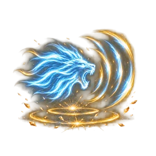
지금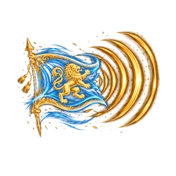
새사자 문장 깃발이 펄럭이며 앞쪽 반원으로 함성
사자 문장 깃발(국기 아님, 문장)
아일랜드 1 · 광전사 회오리 범위
몸이 뒤틀리며 붉은 기운 회오리(끌어당김)
아일랜드 2 · 게 볼그 돌격 돌진
미늘 달린 창 궤적이 번개처럼 두 번 꺾임
스위스 1 · 알프스 미늘창 덫 설치
바닥에서 미늘창 다발이 솟음
스위스 2 · 사과 과녁 석궁 연사
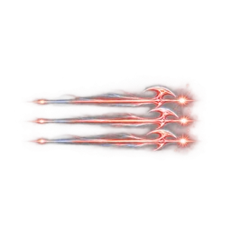
지금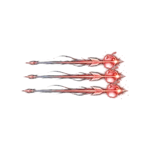
새석궁 화살이 사과를 꿰뚫듯 줄줄이 관통
미국 1 · 랜턴 신호탄 튕김 연사
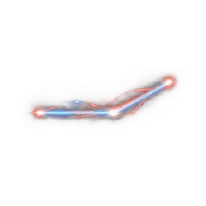
지금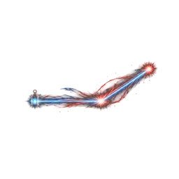
새등불 빛줄기가 벽에 튕김
지금과 비슷 — 끝에 등불 빛 작게
미국 2 · 자유의 종 파동 설치
지금새
종이 울릴 때마다 고리가 퍼짐
네덜란드 1 · 함포 일제 사격 연사
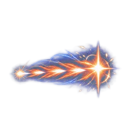
지금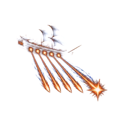
새배 옆구리 대포 5발, 마지막 한 발 크게
네덜란드 2 · 바닷바람 순간 돌파 돌진
돛 모양 바람과 함께 순간 이동
덴마크 1 · 잠든 거인의 표식 돌격 돌진
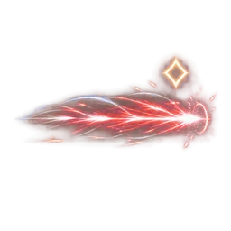
지금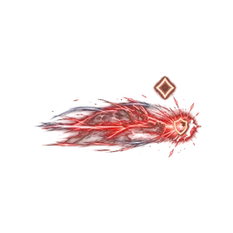
새돌 거인 그림자 + 맞은 적에 방패 문양 표식
덴마크 2 · 크론보르 수호 회전 범위
지금새
성벽 돌 조각이 함께 돌며 원이 커짐
오스트리아 1 · 용기병 돌격 돌진
지금새
말발굽 자국(판정 동안만 옅게)
오스트리아 2 · 빈 성벽 이중 베기 범위
성벽 모양 안쪽·바깥 원 두 번
독일 1 · 강철 손 회전베기 범위
쇠 의수가 빛나며 대검 큰 원
독일 2 · 강철 손 내려찍기 돌진
돌진 끝 쇠 주먹으로 땅을 찍어 균열 원
스웨덴 1 · 캐롤린 돌격 대형 돌진
파란 제복 병사 분신 2명이 나란히
스웨덴 2 · 룬스톤 원진 설치
지금새
룬 무늬 돌 여섯 개가 원을 만듦(글자는 장식 무늬로만)
돌 무늬는 장식 소용돌이(글자 아님)
핀란드 1 · 히이시 엘크 스키 질주 돌진
지금새
스키 자국 + 눈보라
핀란드 2 · 칸텔레 노래 함정 설치
현악기 칸텔레 소리 물결에 외계인이 느려짐
프랑스 1 · 백합 깃발 휩쓸기 범위
깃발 휘두르며 앞쪽 부채꼴 빛
⚠️ 깃발에 백합 문양(fleur-de-lis)과 아주 작은 깃발 든 사람 실루엣 — 왕실 문장이라 괜찮다고 보지만 빼려면 다시 그려요
프랑스 2 · 오를레앙 돌파 돌진
지금새
성문을 부수듯 밀고 가 벽 충돌 섬광
이탈리아 1 · 군단 진영 설치
네 모서리 방패벽 사이로 창
이탈리아 2 · 자마 군단 전진 찌르기 연사
방패 들고 한 걸음씩 전진
스페인 1 · 티소나 일섬 돌진
지금새
명검 티소나 한 줄기 섬광
지금과 거의 같은 한 줄 섬광(명검 한 줄기라 맞음)
스페인 2 · 콜라다 회전베기 범위
두 번째 명검 콜라다로 돌며 전진
체코 1 · 전차 요새 설치
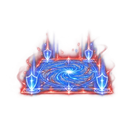
지금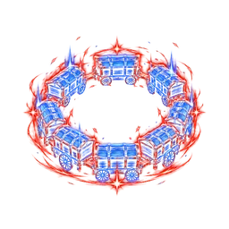
새나무 수레가 원으로 둘러섬
체코 2 · 후스 도리깨 범위
쇠사슬 도리깨 세 바퀴
리투아니아 1 · 게디미나스 기둥 창돌격 돌진
기둥 문장 방패 + 창 궤적
방패에 기둥 문장(국가 상징, 사실 확인 낮음)
리투아니아 2 · 기마 투창 3연 연사
하늘로 던진 창 세 자루가 차례로
일본 1 · 노 목검 일격 돌진
지금새
배 노를 깎은 목검으로 한 줄 베기
일본 2 · 이도류 삼연 베기 범위
지금새
두 자루 칼로 세 마리를 차례로
포르투갈 2 · 루시타니아 창 찌르기 연사
목동 창 + 물보라
폴란드 2 · 검은 기사 장창 휩쓸기 범위
검은 갑옷 + 긴 창 한 바퀴
헝가리 1 · 후사르 사브르 연격 연사
사방 여덟 번 칼빛
헝가리 2 · 맷돌 장사 돌진 돌진
큰 맷돌을 들고 밀고 나감
슬로바키아 1 · 타트라 도끼 내려찍기 범위
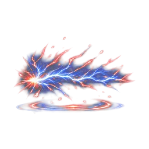
지금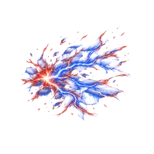
새산 바위가 갈라지는 균열
그리스 1 · 스파르타 팔랑크스 범위
지금새
청동 방패 줄 + 창 다섯 개
그리스 2 · 아킬레우스 창 돌격 돌진
돌진 끝 빛나는 창 던지기
튀르키예 1 · 코푸즈 칼날 고리 범위
지금새
현악기 코푸즈 소리와 함께 칼날 3개가 돎
튀르키예 2 · 서사시 영웅 돌파 돌진
휘어진 곡선 질주
멕시코 1 · 독수리 전사 일격 돌진
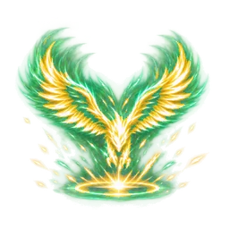
지금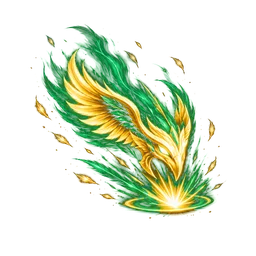
새독수리 깃털 투구로 내리꽂기
멕시코 2 · 마쿠아우이틀 날개 베기 범위
흑요석 날 곤봉으로 좌·우 두 번
콜롬비아 1 · 엘도라도 황금 함성 범위
지금새
황금 가루가 퍼지며 멈춤
콜롬비아 2 · 황금 그림자 돌격 돌진
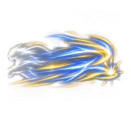
지금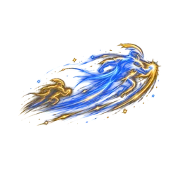
새1초 뒤 황금빛 분신이 같은 길